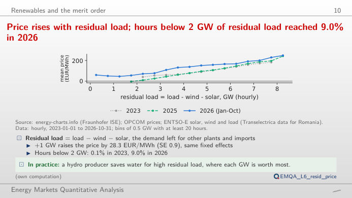
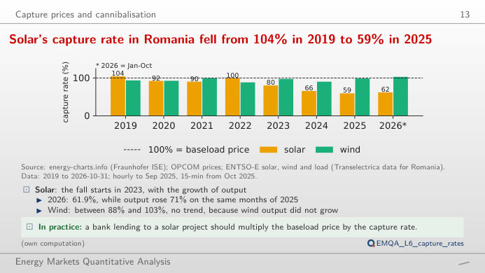
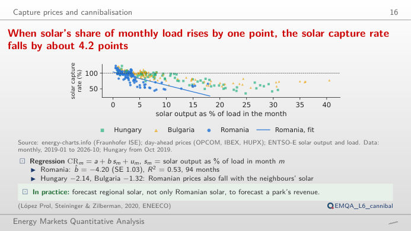
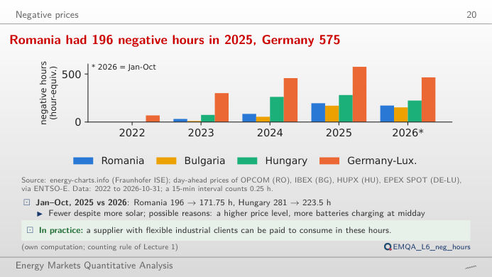
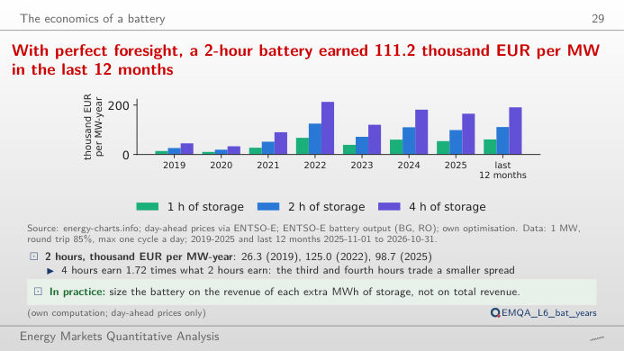
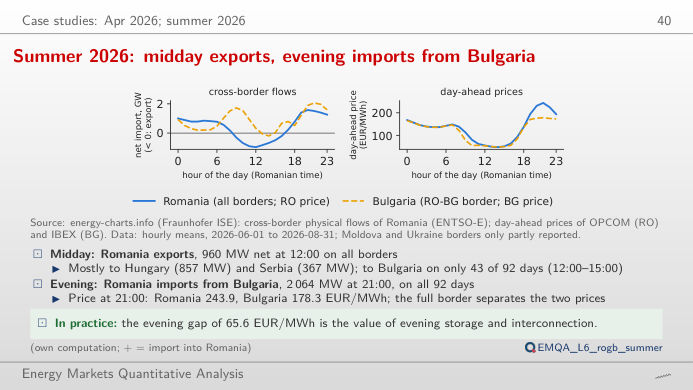

The slide of the lecture is on the left, the same figure on the right, recomputed in your browser from the course data (data/clean) when you move a control. The ▶ button moves the main parameter step by step. Under each figure: a readout, a question for the room and the Quantlet with the code of the chart.
Renewables and the merit order · Capture prices and cannibalisation · Negative prices · The economics of a battery · Case study: summer 2026, Romania and Bulgaria
Renewables and the merit order
Price rises with residual load; hours below 2 GW of residual load reached 9.0% in 2026

Answer
In about 9% of the hours of 2026 (to the cut-off), against 0.1% in 2023; the mean price in those hours is about 51 EUR/MWh, against about 192 EUR/MWh when residual load is above 6 GW. Across 2023–2026, a regression with month, hour and weekday fixed effects gives +28.32 EUR/MWh per GW of residual load (t = 32.1). The cloud of points is wide: residual load explains a large part of the price, but neighbouring markets, hydro and fuel prices move it too.
Capture prices and cannibalisation
Solar's capture rate in Romania fell from 104% in 2019 to 59% in 2025

Answer
Because solar output is concentrated in the same midday hours, and as capacity grew those hours became the cheapest of the day (the merit-order effect of the plants themselves). In 2025 solar earned 64.2 EUR/MWh against a base price of 108.2 EUR/MWh, a discount of 43.9 EUR/MWh. Wind, spread more evenly over the day and night, keeps a much higher capture rate: switch the technology.
When solar's share of monthly load rises by one point, the solar capture rate falls by about 4.2 points

Answer
About 4.2 percentage points (slope −4.2, R² = 0.53 on 94 months; standard error 1.03 in the lecture, robust to autocorrelation). The same slope is −1.32 in Bulgaria and −2.14 in Hungary. Move the start of the window: the slope estimated on recent months only is driven by the record solar shares of 2025–2026 (up to 17.8% of the load in August 2026, lowest capture rate 44.3% in March 2026).
Negative prices
Romania had 196 negative hours in 2025, Germany 575

Answer
In the middle of the day (roughly 10:00–16:00) of the spring months, when solar output is high, demand moderate and hydro plants run. The heat map counts hour-equivalents (a 15-minute interval counts 0.25 h); the right panel shows the duration-weighted mean of the negative prices by month. Choose 2022: Romania had no negative price before May 2023.
The economics of a battery
With perfect foresight, a 2-hour battery earned 111.2 thousand EUR per MW in the last 12 months

Answer
No: 165.2 thousand EUR, i.e. 1.67 times as much. The extra hours of storage buy energy in less cheap hours and sell it in less expensive ones, so each MWh of capacity earns less (and the real schedule is decided on forecasts, not on known prices: with the mean profile of the previous week the lecture keeps about 85% of the perfect-foresight revenue). Move the efficiency: from 75% to 95%, the revenue of the 2-hour battery in Romania rises by 39–46% in 2019–2022 but only by 21–22% in 2024–2026, when the deep midday troughs (down to negative prices) make the buying price small compared with the selling price, so the losses cost less.
Case study: summer 2026, Romania and Bulgaria
Summer 2026: midday exports, evening imports from Bulgaria

Answer
From Bulgaria, on all 92 days: at 21:00 Romanian time, the mean flow on the Romania–Bulgaria border was 2,064 MW towards Romania. At that hour the mean Romanian price was 243.9 EUR/MWh and the Bulgarian one 178.3 EUR/MWh (gap 65.6 EUR/MWh): the interconnector was congested, otherwise market coupling would have equalised the two prices. At midday both prices were about 50 EUR/MWh and Romania exported, mostly to Hungary (857 MW) and Serbia (367 MW).
Day-ahead prices: OPCOM PZU (Piața pentru Ziua Următoare, the Romanian day-ahead market), IBEX (Bulgaria), HUPX (Hungary), EPEX (Germany–Luxembourg); generation, load and cross-border physical flows (data of ENTSO-E, the European Network of Transmission System Operators for Electricity): energy-charts.info (Fraunhofer ISE). Prices hourly to September 2025 and per 15 minutes from 1 October 2025 (a quarter-hour counts 0.25 h). Battery: 1 MW, at most one full cycle a day, perfect foresight of the day-ahead prices, optimal schedule of each delivery day by linear programming (rule of the lecture). Data to the cut-off of the lecture (31 October 2026).